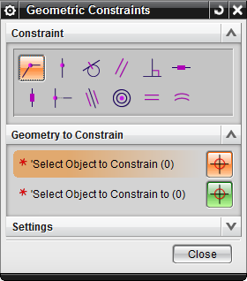

Geometric Constraints dialog box
Geometric Constraints dialog box
What is it?
When you choose the Geometric Constraints command, NX now displays a dialog box. You must first select a constraint type and then select the objects that you want to constrain. This new workflow allows you to quickly create the same constraint on multiple objects.

When the Select Object to Constrain option is active, you can select multiple objects.
In the Settings group, you can select the:
-
Automatic Selection Progression check box so that you do not need to click OK to advance to the Select Object to Constrain to option.
-
Constraints that you want to display by default in the Constraints group.
Why should I use it?
In previous releases, applying constraints to multiple objects was cumbersome and error-prone. You had to select the objects first and the constraint you could apply depended on the objects you selected. For example, if you wanted to apply a Tangent constraint and you selected an arc and an end point, you could apply only a Fixed or Point on Curve constraint. Now, because you select the constraint type first, it becomes easy to select two objects, and then continue to select the next two objects.
Where do I find it?
|
Application |
Modeling, Drafting, Shape Studio, Sheet Metal |
|
Toolbar |
(Modeling, Shape Studio, Sheet Metal) Direct Sketch→Geometric Constraints (Sketch task environment and Drafting) Sketch Tools→Geometric Constraints |
|
Menu |
(Modeling, Shape Studio, Sheet Metal, Drafting) Insert→Sketch Constraint→Geometric Constraints (Sketch task environment) Insert→Sketch Constraint→Geometric Constraints |